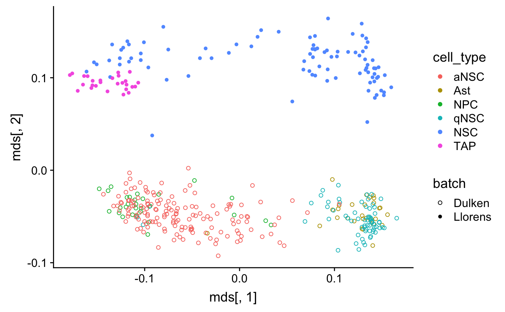
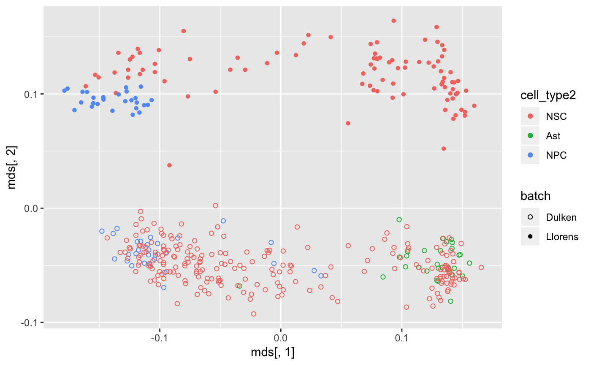

Neurogenesis in the SVZ
Yutong Wang
2019-01-31
neurogenesis.RmdIn this vignette, we use the semi-supervised version of corgi applied to the neurogenesis in subventricular zone datasets:
library(corgi)
library(knitr)
library(ggplot2)
library(scran) # we only need to use the multiBatchNorm function
library(scmap) # we only need to use the selectFeatures function
library(cowplot) # we use this to generate the multipanel plotsLoading Llorens-Bobadilla et al. 2015 dataset
Load data from Llorens-Bobadilla. This code is obtained from the GitHub code for Figure 6B in Dulken et al 2017
Llorens_allcounts<-read.table(url("https://github.com/bdulken/SVZ_NSC_Dulken_2/raw/master/Files/Llorens_counts_allgenes.txt"))
allcounts_allcells<-Llorens_allcounts
#Remove neuroblasts from Llorenss data
#allcounts_allcells_notaps<-allcounts_allcells[!grepl("tap",colnames(allcounts_allcells))]
allcounts_allcells_noblasts<-allcounts_allcells[!grepl("PSA",colnames(allcounts_allcells))]
#Remove oligodendrocytes from Llorenss data
oligos<-as.vector(read.table(url("https://raw.githubusercontent.com/bdulken/SVZ_NSC_Dulken_2/master/Files/comp_oligos.txt"))[,1])
allcounts_allcells_noblasts_nooligo<-allcounts_allcells_noblasts[,-na.omit(match(oligos,colnames(allcounts_allcells_noblasts)))]
allcounts_allcells_noblasts_nooligo_noERCC<-allcounts_allcells_noblasts_nooligo[!grepl("ERCC-",rownames(allcounts_allcells_noblasts_nooligo)),]
llorens <- allcounts_allcells_noblasts_nooligo_noERCCOverview of the Llorens-Bobadilla dataset
| N_GP_1_STAR_sorted_counts | N_GP_10B_STAR_sorted_counts | N_GP_11_STAR_sorted_counts | N_GP_11B_STAR_sorted_counts | N_GP_12_STAR_sorted_counts | N_GP_12B_STAR_sorted_counts | |
|---|---|---|---|---|---|---|
| 0610005C13Rik | 0 | 0 | 0 | 0 | 0 | 0 |
| 0610007N19Rik | 0 | 0 | 0 | 0 | 0 | 0 |
| 0610007P14Rik | 0 | 252 | 418 | 0 | 312 | 47 |
| 0610008F07Rik | 0 | 0 | 0 | 0 | 0 | 0 |
| 0610009B14Rik | 0 | 0 | 0 | 0 | 0 | 0 |
| 0610009B22Rik | 35 | 203 | 469 | 39 | 0 | 249 |
| 0610009D07Rik | 825 | 1512 | 2044 | 97 | 1071 | 3254 |
| 0610009L18Rik | 0 | 0 | 0 | 1269 | 0 | 375 |
| 0610009O20Rik | 766 | 2203 | 96 | 165 | 2869 | 427 |
| 0610010B08Rik | 0 | 0 | 0 | 0 | 0 | 0 |
Parse the cell type metadata
llorens_cell_type <- factor(
unlist(
lapply(X = colnames(llorens),
FUN = function(x){substr(x,1,1)})
)
)Make the cluster labels more intuitive neural stem and transient transit amplifying cells (NSC and TAP)
Loading Dulken et al 2017 dataset
This code is obtained from the GitHub code for Figure 1 in Dulken et al 2017. The difference between our code and theirs is that we don’t filter out cell-cycle genes.
#Loading all high quality cells and filtering for lowly expressed genes
spec_pops<-read.table(url("https://raw.githubusercontent.com/bdulken/SVZ_NSC_Dulken_2/master/Files/AllCounts_specPops_read_gene_ERCC_filt_FINAL.txt"))
allcounts_allcells<-spec_pops
#Removing Oligodendrocytes and Outliers
oligos<-as.vector(read.table(url("https://raw.githubusercontent.com/bdulken/SVZ_NSC_Dulken_2/master/Files/STAR_oligos_updated_09232015.txt"))[,1])
allcounts_allcells_nooligo<-allcounts_allcells[,-na.omit(match(oligos,colnames(allcounts_allcells)))]
#Filtering for expressed by 5 cells at 10 counts
greaterthan0<-allcounts_allcells_nooligo>10
greaterthan0sum<-rowSums(greaterthan0)
allcounts_allcells_nooligo_genefilt<-allcounts_allcells_nooligo[greaterthan0sum>=5,]
dulken <- allcounts_allcells_nooligo_genefiltOverview of the Dulken dataset
| NPC_06_1g | NPC_16_1g | NPC_19_1g | NPC_25_1g | NPC_35_1g | NPC_38_1g | |
|---|---|---|---|---|---|---|
| 0610007P14Rik | 56 | 0 | 21 | 0 | 0 | 0 |
| 0610009B22Rik | 0 | 0 | 0 | 0 | 0 | 0 |
| 0610009D07Rik | 0 | 37 | 1 | 0 | 4 | 0 |
| 0610009O20Rik | 0 | 1 | 0 | 0 | 3 | 0 |
| 0610010F05Rik | 0 | 0 | 13 | 0 | 0 | 0 |
| 0610010K14Rik | 0 | 0 | 0 | 0 | 0 | 0 |
| 0610011F06Rik | 30 | 0 | 13 | 0 | 0 | 30 |
| 0610012G03Rik | 2 | 0 | 0 | 0 | 0 | 0 |
| 0610030E20Rik | 0 | 0 | 0 | 0 | 0 | 0 |
| 0610031J06Rik | 0 | 0 | 0 | 0 | 0 | 0 |
Parse the cell type metadata
dulken_cell_type <-
factor(
unlist(
lapply(X=colnames(dulken),
FUN=function(x){strsplit(x,split = "_",fixed=T)[[1]][1]})
)
)
We consider only genes in both datasets.
shared_genes <- intersect(rownames(dulken),rownames(llorens))
length(shared_genes)
#> [1] 8357
dulken <- dulken[shared_genes,]
llorens <- llorens[shared_genes,]Combine the datasets
Merged metadata for the merged dataset
cell_type <- forcats::fct_c(dulken_cell_type,llorens_cell_type)
batch <- c(rep("Dulken",ncol(dulken)),rep("Llorens",ncol(llorens)))Overview of the cell types in each dataset
| Dulken | Llorens | |
|---|---|---|
| aNSC | 152 | 0 |
| Ast | 29 | 0 |
| NPC | 29 | 0 |
| qNSC | 69 | 0 |
| NSC | 0 | 92 |
| TAP | 0 | 27 |
Simplify and combine some of the cell-types for visualization
cell_type2 <- plyr::mapvalues(x = cell_type,
from = c("aNSC", "Ast", "NPC", "qNSC", "NSC", "TAP"),
to = c("NSC","Ast","NPC","NSC","NSC","NPC"))
kable(table(cell_type2, batch))| Dulken | Llorens | |
|---|---|---|
| NSC | 221 | 92 |
| Ast | 29 | 0 |
| NPC | 29 | 27 |
Dimensionality reduction using all genes
Multidimensional-scaling on Spearman rho distance matrix using all the genes results in a scatterplot with clearly separated batches
D <- (1-cor(comb,method = "spearman"))/2 # Spearman rho distance matrix
mds <- cmdscale(D,k=2) # Multidimensional-scaling
qplot(mds[,1],mds[,2],color = cell_type,shape = batch) +
scale_shape_manual(values=c(1,16))

Download the genes ranked by their supervised feature selection method
library("openxlsx")
consensus_genes <- read.xlsx("https://www.ncbi.nlm.nih.gov/pmc/articles/PMC5269583/bin/NIHMS839312-supplement-7.xlsx")
dim(consensus_genes)
#> [1] 100 101
kable(consensus_genes[1:10,1:5]) # print a nice looking table of the top-left corner of the data| GBM.Importance.Rank | Model.1 | Model.2 | Model.3 | Model.4 |
|---|---|---|---|---|
| 1 | Clu | Gja1 | Ptma | Clu |
| 2 | Htra1 | Vrk1 | Clu | Htra1 |
| 3 | Ccnd2 | Gm13826 | Htra1 | Nono |
| 4 | H3f3b | Ccnd2 | Serf1 | Hnrnpk |
| 5 | Malat1 | Aldoc | Pola1 | Fabp7 |
| 6 | Gja1 | Ptma | Gja1 | Ndufa6 |
| 7 | Aldoc | Igfbpl1 | Jag1 | Ran |
| 8 | Igfbpl1 | Slc1a2 | Rpl7 | Dlx2 |
| 9 | Son | Actb | Slc1a2 | Dbi |
| 10 | Rpa1 | Jag1 | Tmsb4x | Rpl8 |
consensus_genes <- consensus_genes[,-c(1)] # remove the first column, which is metadata
# Input: percentage (a number between 0 and 100)
# Output: gene_set consisting of genes showing up in at least percentage number of models
top_consensus_genes <- function(percentage) {
gene_set <- c()
for (g in Reduce(union, consensus_genes)) {
if (sum(sapply(
X = consensus_genes,
FUN = function(model) {
g %in% model
})) > percentage) {
gene_set <- c(gene_set, g)
}
}
return(gene_set)
}
consensus34 <- top_consensus_genes(percentage = 50)There are 34 genes that show up in more than 50% of the models, in agreement with Dulken et al. 2017
Running semi-supervised corgi with the consensus gene set as markers
corgi_gene_set <- select_top_corgi_genes(corgi_output_neurogenesis,n = 100)
length(corgi_gene_set)
#> [1] 100
D <- (1-cor(comb[union(corgi_gene_set,consensus34),],method = "spearman"))/2
mds <- cmdscale(D,k=2)
qplot(mds[,1],mds[,2],color = cell_type,shape = batch) +
scale_shape_manual(values=c(1,16))
Recreating the paper figure
In this section, we recreate the figures in our paper, i.e., comparing with highly dropped-out genes.
Normalize the datasets
dulken <- SingleCellExperiment(assay = list(counts = as.matrix(dulken)))
llorens <- SingleCellExperiment(assay = list(counts = as.matrix(llorens)))
out <- multiBatchNorm(dulken,llorens) # the output has logcounts
dulken <- out[[1]]
llorens <- out[[2]]
HDG_ranking <- function(sce){
rowData(sce)$feature_symbol <- rownames(sce)
sce <- selectFeatures(sce)
return(rownames(sce)[order(rowData(sce)[["scmap_scores"]],decreasing = T,na.last = T)])
}
n <- length(union(corgi_gene_set,consensus34))
gene_sets <- get_compared_gene_sets(
batch1_top_genes = HDG_ranking(dulken),
batch1_name = "HDG(Dulken)",
batch2_top_genes = HDG_ranking(llorens),
batch2_name = "HDG(Llorens)",
desired_size = n,
marker_genes = consensus34)
# Because the consensus model is a monotonic non-increasing gene-set function in the percentage
gene_sets[["Consensus"]] <-
get_gene_set_of_size_n(
gs_func = function(x)intersect(top_consensus_genes(101-x),shared_genes),
n = n,
LB = 1,
UB = 100
)
gene_sets[["CorGI"]] <- union(corgi_gene_set,consensus34)
gene_sets <- gene_sets[c(6,5,4,3,2,1)]
lapply(gene_sets, length)
#> $CorGI
#> [1] 134
#>
#> $Consensus
#> [1] 133
#>
#> $Intersection
#> [1] 134
#>
#> $Union
#> [1] 135
#>
#> $`HDG(Llorens)`
#> [1] 134
#>
#> $`HDG(Dulken)`
#> [1] 134my_shape_palette <- scale_shape_manual(values = c(1, 16))
my_color_palette <- scale_color_manual(values = c("#E69F00","#000000", "#56B4E9"))plot_panel <- function(embeddings, emb_name){
lapply(X = seq_along(gene_sets),
FUN = function(i){
gs_name <- names(gene_sets)[i]
emb <- embeddings[[i]]
plot_dimensionality_reduction(emb,batch,cell_type2,gs_name,emb_name) +
my_shape_palette +
my_color_palette
}) -> plts
plts[["labels"]] <- c("A","B","C","D","E","F")
dr_plts <- do.call(what = plot_grid,args = plts)
dr_plts
emb <- embeddings[[1]]
shape_lgnd <- get_legend(qplot(emb[,1],emb[,2],shape = batch)+my_shape_palette)
color_lgnd <- get_legend(qplot(emb[,1],emb[,2],color = cell_type2)+my_color_palette)
qplot(emb[,1],emb[,2],asp = 1,shape = NA) +
xlab(paste0(emb_name,1)) +
ylab(paste0(emb_name,2)) +
theme(axis.ticks = element_blank(),
axis.text = element_blank(),text = element_text(size=10)) -> axes_lgnd
axes_lgnd
all_lgnds <- plot_grid(axes_lgnd,plot_grid(shape_lgnd,color_lgnd),nrow=2)
all_lgnds
results <- data.frame(
TPR = numeric(0),
FPR = numeric(0),
Gene_set = factor(character(0), levels = names(gene_sets))
)
i <- 1
n_cells <- length(batch)
train <- batch == "Dulken"
test <- batch == "Llorens"
for (gs_name in names(gene_sets)) {
emb <- embeddings[[gs_name]]
for (k in 5 * (1:6)) {
class::knn(
train = emb[train, ],
test = emb[test, ],
cl = cell_type2[train],
k = k
) -> cell_type2_pred
caret::confusionMatrix(data = cell_type2_pred,
reference = cell_type2[test],
positive = "NPC") -> output
TPR <- output$byClass["Class: NPC", "Sensitivity"]
FPR <- 1 - output$byClass["Class: NPC", "Specificity"]
results[i, "TPR"] <- TPR
results[i, "FPR"] <- FPR
results[i, "Gene_set"] <- gs_name
i <- i + 1
# }
}
}
ggplot(results, aes(x = FPR, y = TPR)) +
geom_jitter(aes(shape = Gene_set, color = Gene_set),
size = 3,
width = 0.0005) +
scale_shape_manual(values = 65:70) + # makes the labels from A to F
scale_x_continuous(breaks = scales::pretty_breaks(n = 2)) +
theme_bw()-> AUC_plt
plot_grid(dr_plts,
plot_grid(all_lgnds,
AUC_plt,
rel_widths=c(1,2),
labels=c("","G")),
nrow=2,
rel_heights = c(2,1)) -> final_plot
return(final_plot)
}embeddings_mds <-
lapply(
X = gene_sets,
FUN = function(gene_set) {
D <- (1 - cor(comb[gene_set, ], method = "spearman")) / 2
return(cmdscale(D, k = 2))
}
)
embeddings_mnn_pca <-
lapply(
X = gene_sets,
FUN = function(gene_set) {
mnn.out <- mnnCorrect(logcounts(dulken[gene_set,]),logcounts(llorens[gene_set,]))
t.mnn <<- as.matrix(t(do.call(cbind, mnn.out$corrected)))
pca.mnn <- prcomp(t.mnn, rank=2)
return(pca.mnn$x)
}
)